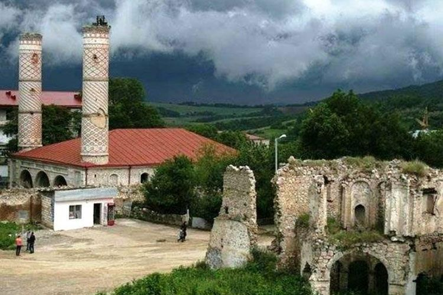

KARABAKH
S H U S H A
Shusha is a city and the centre of the Shusha Districy of Azerbaijan.Situated at an altitude of 1,400–1,800
metres (4,600–5,900 ft) in the Karabakh mountains, Shusha was a mountain recreation resort in the Soviet
era.
According to some sources the town of Shusha was founded in 1752 by Panah Ali Khan.From the
mid-18th century to 1822 Shusha was the capital of the Karabakh Khanate. The town became one of the
cultural centers of the South Caucasus after the Russian conquest of the Caucasus region in the first
half of the 19th century over Qajar Iran.
Between 1992 and November 2020, Shusha was under the de facto control of the self-proclaimed
Republic of Artsakh and administerd as part of its Shushi Province. On 8 November 2020, Azerbaijani
forces retook the city during the 2020 Nagorno-Karabakh War following a four-day long battle.

During the 2020 Nagorno-Karabakh war, Armenia accused the Azerbaijani army of shelling civilian areas
and the city's Ghazanchetsots Cathedral. Three journalists were wounded while they were inside the
cathedral to film the destruction of a previous shelling on the same day.Azerbaijani Ministry of Defence
has denied the shelling of the cathedral by stating that "destruction of the church in Shusha has
nothing to do with the activities of the Army of Azerbaijan.The House of Culture was also badly damaged
in the fighting.
On November 8, 2020, Azerbaijani President Ilham Aliyev announced that the Azerbaijani
army took control of the city of Shusha.he next day, the Azerbaijani Ministry of Defence released a
video from the city, confirming full Azerbaijani control.On the same day, Artsakh authorities confirmed
that they had lost control of Shusha.